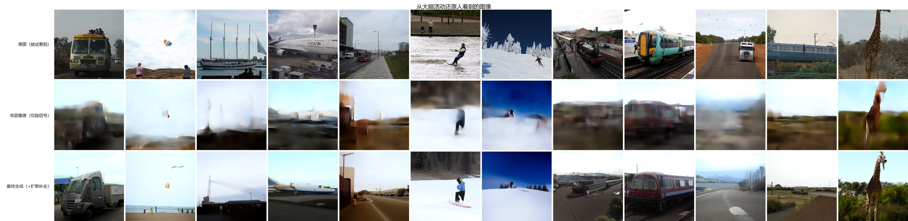
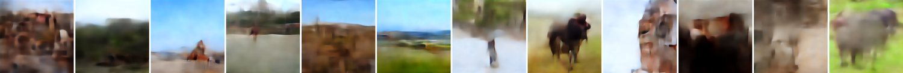
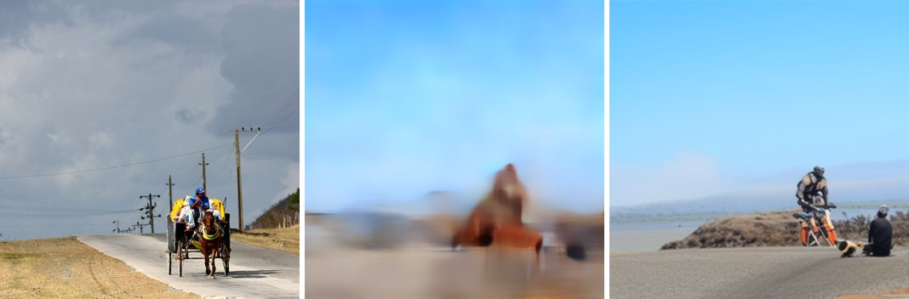
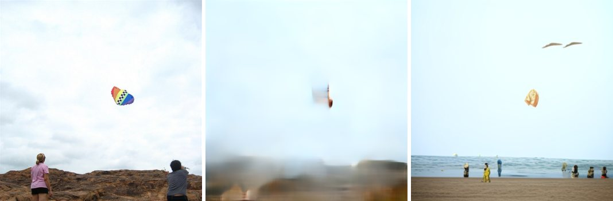
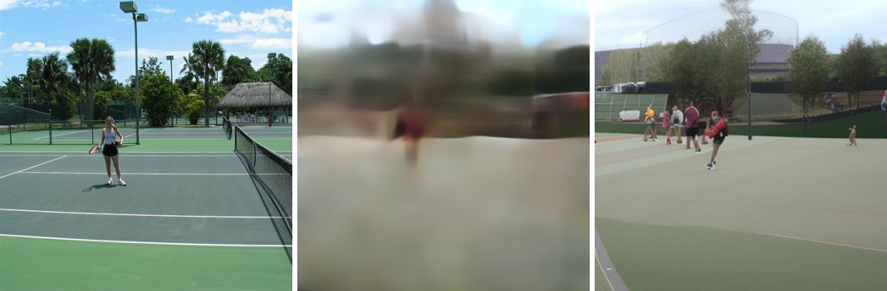
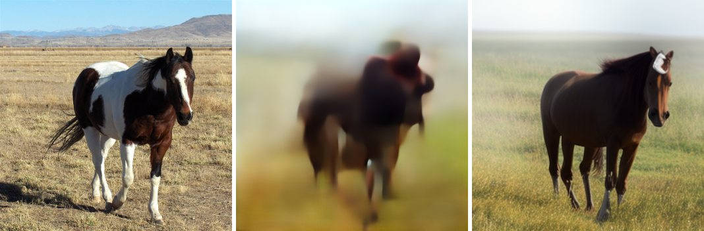
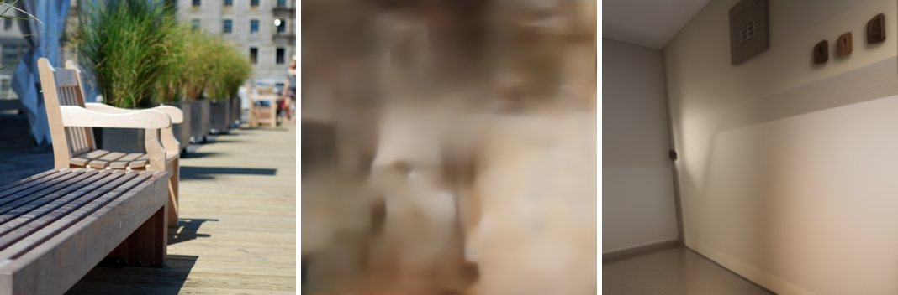
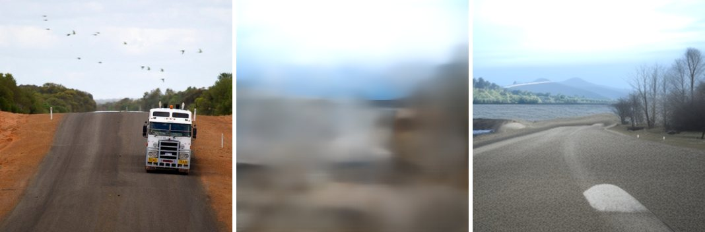

fMRI · MindEye 复现 · 2026
从大脑活动还原人看到的图像
让一个人看一张照片，只记录他大脑的活动，然后用计算机把这幅照片重新画出来。 这不是比喻——第三行画面生成时，计算机从未接触过原图。

0.414像素相关性（原论文 0.390）
0.363结构相似度（原论文 0.337）
8 GB笔记本显存（原论文 8 张服务器显卡）
982张从未见过的测试图
怎么做的
- 志愿者躺进一台 7 特斯拉 fMRI，连续观看约一万张自然照片，每张闪现数秒。
- 机器记录视觉皮层一万多个体素的血氧信号，得到大量「照片 ↔ 脑信号」配对。
- 训练网络学习这个对应关系；再给它一份从未见过的脑信号，推断对方看到了什么。
- 语义指纹负责「是什么」，布局草图负责「在哪里」，扩散模型负责把细节补回来。
单行切片点开看大图

单个样本24 组 · 每组三行






它为什么美
人看过的东西，已经被时间带走了，但它还留在脑子里。这个项目做的，是把它重新召唤出来—— 一个人看了一眼，他的脑子记住了，而我们把它取了出来。
六项评分指标全部对亮度与对比度不敏感。我们曾遇到一版「指标正常、整张发灰」的结果， 最后是靠人眼发现的。打分的东西不知道它好不好看。